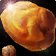
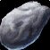
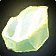
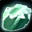

Übersicht
Beste Paarung
Schmiedekunst oder Ingenieurskunst.
Wichtig
Spitzhacke im Inventar und Mineralien aufspüren nach Tod neu aktivieren.
Schnellstart
Mit Gold kannst du durch Verhütten bis etwa 105 springen.
Routen

1–65 · KupferElwynn / Dun Morogh / Durotar / Mulgore
Oder verhütten: 120–140 Kupfererz.65–125 · Zinn + Kupfer + Silber
Allianz Sumpfland; Horde Silberwald/Hügelland
Verhütten bringt dich oft bis ~105.
125–175 · Eisen + GoldArathi / Tausend Nadeln / Desolace
Optional Eisen/Gold verhütten.
175–245 · Mithril + EchtsilberHinterland / Tanaris
Artisan bei 200 lernen.245–275 · Mithril + Thorium
Un'Goro / Verwüstete Lande / Teufelswald
Kleine Thoriumader ab 245.
275–300 · Thorium / Reiche ThoriumaderUn'Goro / ÖP / Winterspring / Brennende Steppe
Reiche Thoriumader ab 275.1–105 schnell: etwa 140 Kupfererz + 70 Zinnerz → Kupfer bis 65 → Zinn → Bronze.
Tipp: Im Reiter Erz-Karten kannst du jedes Erz anklicken und bekommst eine kleine Gebiets-Karte mit Markierungen für die besten Farmrouten.
Lehrer
Alle Ränge
Gelman Stonehand
Sturmwind · Zwergenviertel
/mappin 1453 51.0 17.2Alle Ränge
Geofram Bouldertoe
Ironforge · Große Schmiede
/mappin 1455 50.2 26.0Lehrling
Kelsey Fargo
Nordhain
/mappin 1429 47.2 32.6Alle Ränge
Kurdram Stonehammer
Auberdine
/mappin 1439 38.2 41.0Alle Ränge
Makaru
Orgrimmar · Tal der Ehre
Alle Ränge
Brek Stonehoof
Thunder Bluff
Alle Ränge
Brom Killian
Undercity · Kriegsviertel
Beste Praxis & Forever-Hinweise
Schnellste 1–105: ca. 140 Kupfererz + 70 Zinnerz kaufen → Kupfer bis 65 → Zinn bis 75 → 70 Bronze herstellen.
Beste Alliance 65–125: Sumpfland-Höhle, wenn dein Level die schnell respawnenden Mobs zulässt.
Beste Horde 65–125: Silberwald-Höhle oder Hügelland; ebenfalls auf schnelle Mob-Respawns achten.
+5 Bergbau: Eisen schon bei 120 statt 125; sehr hilfreich für zähe Übergänge.
Nach Tod: Mineralien aufspüren wieder aktivieren – der Tracking-Buff fällt ab.
Klickbare Erz-Karten
So nutzen: Klick auf ein Erz. Im Fenster siehst du die besten Gebiete mit markierten Routen. Die Karten sind dafür gedacht, dass du schnell weißt, wo du im Gebiet entlanglaufen solltest – also Randrouten, Höhlen oder Hotspots.